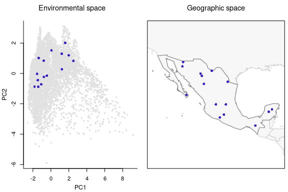
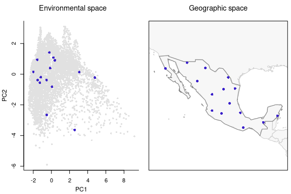

biosurvey: Selecting sampling sites
Claudia Nunez-Penichet, Marlon E. Cobos, Jorge Soberon, Tomer Gueta, Narayani Barve, Vijay Barve, Adolfo G. Navarro-Siguenza, A. Townsend Peterson
Source:vignettes/biosurvey_selecting_sites.Rmd
biosurvey_selecting_sites.RmdData for analysis
Let’s first prepare the data to continue with further processes.
# Data
data("m_matrix", package = "biosurvey")
# Creating blocks
m_blocks <- make_blocks(m_matrix, variable_1 = "PC1",
variable_2 = "PC2", n_cols = 20, n_rows = 20,
block_type = "equal_area")Selection of sites considering environmental uniformity and geographic patterns
The goal of this type of selection is maximizing uniformity of points in environmental space, but considering geographic patterns of data. Similar environments (form the same block) that have a disjoint geographic pattern (are represented in geographic in various clusters) are selected twice (so they consider the biggest geographic clusters).
# Selecting sites uniformly in E and G spaces
EG_sel <- EG_selection(master = m_blocks, n_blocks = 10)
#> Element 'preselected_sites' in 'master' is NULL, setting
#> 'use_preselected_sites' = FALSE
#> Preparing data for analysis
#> Selecting relevant environmental blocks, please wait...
#> Running algorithm for selecting sites, please wait...
#> Process 1 of 10
#> Process 2 of 10
#> Process 3 of 10
#> Process 4 of 10
#> Process 5 of 10
#> Process 6 of 10
#> Process 7 of 10
#> Process 8 of 10
#> Process 9 of 10
#> Process 10 of 10
#> Total number of sites selected: 15Now let’s check the results of this selection in environmental and geographic spaces.
# Plotting sites selected considering EG
plot_sites_EG(EG_sel, selection_type = "EG")
As you may have noticed, there are more points than what you defined in the argument n_blocks in the function EG_selection. This is because the function explores those environmental blocks in geographic space and defines two points when the geographic pattern of such points is clustered.
Selecting sites randomly
Selecting survey sites randomly is one of the multiple ways to select places to sample. Although it can be useful for avoiding some biases in the selection, it is not recommended when trying to sample most of the biodiversity in a region. The following lines of code will allow users to select survey sites based on a random selection of available points. This selection approach does not consider geographic or environmental configurations.
Note: We are going to use the object that resulted from the previous process of selection (a master_selection object) as it allows to add other sets of selected sites to maintain your results organized.
# Selecting sites randomly
EG_r_selection <- random_selection(EG_sel, n_sites = 15, n_samplings = 5)
#> Element 'preselected_sites' in 'master' is NULL, setting
#> 'use_preselected_sites' = FALSE
#> Selecting sampling sites randomly
#> Total number of sites selected: 15Checking the sites selected randomly. Note that for selections of type “random” or “G” the arguments “variable_1” and “variable_2” need to be defined in the plotting function.
# Plotting selected sites
plot_sites_EG(EG_r_selection, selection_type = "random", variable_1 = "PC1",
variable_2 = "PC2")
Selection of sites aiming for uniformity in geographic space
With the following lines of code, survey sites can be selected so they are located uniformly in geographic space, without considering environmental conditions. This allows sampling most of the areas in the region of interest.
# Selecting sites uniformly in G space
EG_r_G_selection <- uniformG_selection(EG_r_selection, expected_points = 15,
max_n_samplings = 1, replicates = 5)
#> Element 'preselected_sites' in 'master' is NULL, setting
#> 'use_preselected_sites' = FALSE
#> Running algorithm for selecting sites, please wait...
#> Distance 242.166565850223 resulted in 17 points
#> Distance 266.383222435246 resulted in 13 points
#> Distance 242.166565850223 resulted in 17 points
#> Distance 244.588231508726 resulted in 17 points
#> Distance 247.009897167228 resulted in 16 points
#> Distance 249.43156282573 resulted in 16 points
#> Distance 251.853228484232 resulted in 15 points
#> Total number of sites selected: 15Let’s check the selected sites based only on geographic considerations.
# Plotting sites selected uniformly in the geographic space
plot_sites_EG(EG_r_G_selection, selection_type = "G", variable_1 = "PC1",
variable_2 = "PC2")
Selecting sites aiming for uniformity in environmental space
With the following lines of code you can select sampling sites that are uniformly distributed in environmental space. This will allow sampling most of the environmental conditions that are present in the region of interest.
# Selecting sites uniformly in E space
EG_r_G_E_selection <- uniformE_selection(EG_r_G_selection, expected_points = 15,
max_n_samplings = 1, replicates = 5)
#> Element 'preselected_sites' in 'master' is NULL, setting
#> 'use_preselected_sites' = FALSE
#> Running algorithm for selecting sites, please wait...
#> Distance 0.985888853481237 resulted in 25 points
#> Distance 1.08447773882936 resulted in 20 points
#> Distance 1.18306662417748 resulted in 17 points
#> Distance 1.28165550952561 resulted in 14 points
#> Distance 1.18306662417748 resulted in 17 points
#> Distance 1.1929255127123 resulted in 17 points
#> Distance 1.20278440124711 resulted in 16 points
#> Distance 1.21264328978192 resulted in 15 points
#> Total number of sites selected: 15Let’s check the selected sites based only on environmental considerations.
# Plotting sites selected uniformly in the environmental space
plot_sites_EG(EG_r_G_E_selection, selection_type = "E")